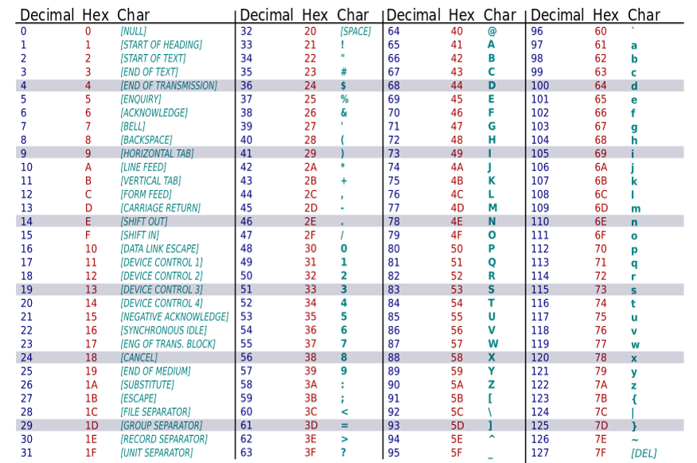

Data Representation Questions
Hexadecimial, Decimal, Binary Conversions
Sometimes you may see 0b or 0x in front of a number. This is a way to indicate what base a number is in. For example, if you see a number like 1001, it can be unclear whether it is in decimal, binary, or hexadecimal form.
By putting 0b in front of a number, we can clearly indicate that a number is in binary form.
0x in front of a number means that a number is in hexadecimal form. .
-
What bases do decimal, hex, and binary use respectively?
- 16, 2, 10
- 10, 2, 16
- 10, 16, 2
- 2, 16, 10
- 16, 10, 2
C. Decimal uses base 10, hex uses base 16, and binary uses base 2. - Convert 200 (in decimal) to binary.
11001000
- Convert 10010111 to decimal.
151
- Convert 0b1010010101101001 to hexadecimal.
A569
- Convert 0xFADE to binary.
0b1111101011011110
- Convert 0x82 to decimal.
130
- Convert 314 to hexadecimal.
0x13A
- What is 0b00001011 in decimal form?
20 + 21 + 23 = 1 + 2 + 8 = 11.
- What is 23 in binary form?
0b00010111 = 24 + 22 + 21 + 20 = 16 + 4 + 2 + 1 = 23
- What is 0xA3FF in decimal?
41983
- What is 304 in hexadecimal?
0x130
- What is 0xF339 in binary?
0b1111001100111001
- What is 0b1101001100011100 in hexadecimal?
0xD31C
-
What are is 78 in binary if 0b1001101 is binary for 77?
- 0b1001102
- 0b1001100
- 0b1001110
- 0b1001010
C -
Convert the following binary number to hexadecimal:
0b1 0101 0000 0001 1101 1101 1110 1100 1010 1111
0x1501DDECAF
(Be careful of the 1 when we group the binary values into fours starting from the right to left, instead of from the left to right) -
Convert the following hexadecimal to binary: 0xD3C0DE7415
0b1101 0011 1100 0000 1101 1110 0111 0100 0001 0101
-
What is 0b111010101111111110 in hexadecimal?
0x3ABFE
-
Transform decimal 333 in binary.
0b101001101
-
When the 8-bit binary representation of 55 is 0b00110111, what is the representation of 56?
0b0011 1000 -
Which of the following is the conversion to decimal of the hex number 0xAF6E?
- 22340
- 32450
- 44910
- 32320
- 24350
C -
Which of the following is the correct representation of the number ten in binary?
- ten
- 10
- 0b1010
- 0b000010
C
- Ask for the number.
- Keep a running total that tracks the digits you have dealt with so far. At this point, the running total is 0 because we haven't looked at any digits in the binary number yet.
- Start at the rightmost digit of the number.
- Multiply that digit by the correct factor of two and add it to the running total. For example, for the rightmost digit, we would multiply it by 20 whereas the digit immediately to the left of it would be multiplied by 21.
- Move one place to the left.
- Repeat the above two steps until there are no more digits to consider.
- Output the running total.

Conceptual Data Questions
- How is data represented in a computer?
Bits (0's and 1's))
- What does each bit mean?
It has no meaning until we give it meaning (e.g., 1=on, 0=off; 1=true, 0=false).
- How many bits does one hexadecimal digit represent?
4 bits. To represent 16 numbers in binary, you need 4 digits.
- How many hexadecimal digits do you need for 1 byte?
2 hexadecimal digits
- What values can each bit represent?
0 or 1
- If we designed an algorithm that looks for a number less than 64, how would converting it to a binary number help make it easier to check?
We know that the 7th binary digit from the right represents 26 = 64, so as long as the leftmost 2 digits are 0 we know that it cannot be more than 64. → 00xx xxxx, where x is either 0 or 1.
-
You are given the binary number 0b1 1110 0011 1101. Answer the following without converting to decimal:
- Can you divide this number by two?
- Is this number larger than 1000?
- How many digits long would the number be if you added 0b1 1100 0011?
- What is this number in hex?
- No
- Yes
- 14
- 0x1E3D
ASCII Questions
- Using the ASCII table below, convert the decode the following ASCII representation: 0x48334C316F35

H3L1o5
To approach this quesiton, first separate 0x48334C316F35 into groups of two hexadecimal digits starting from the right. This will give you 48 33 4C 31 6F 35. Now, look at the ASCII table to see which letters correspond to that group of two hexadecimal digits. You can see that 48 corresponds to H. Do this for each group of two hexadecimal digits and you will get the answer H3L1o5.
- What is ASCII "HelLo" in hexadecimal.
48 65 6C 4C 6F
By looking at the table above, we can find what hexadecimal digit each ASCII character corresponds to. H = 48, e = 65, l = 6C, L = 4c, o = 6F.
- How many bits does regular ASCII represent? How many values can this number of bits represent?
7 bits. Since each bit is either 0 or 1 (i.e., it can only represent 2 values), we can calculate the total number of values that can be represented by 2x2x2x2x2x2x2 = 27 = 128.
- How many values can ASCII represent if it only used 6 bits?
26 = 64 values
- How can you extend regular ASCII to represent more character values?
Have it represent 8 bits, so that it can represent 28 = 256 characters.